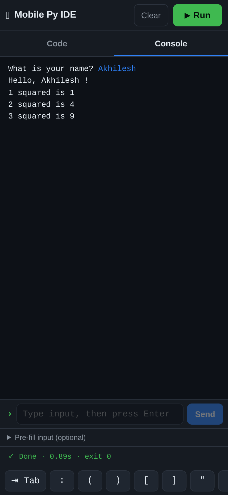
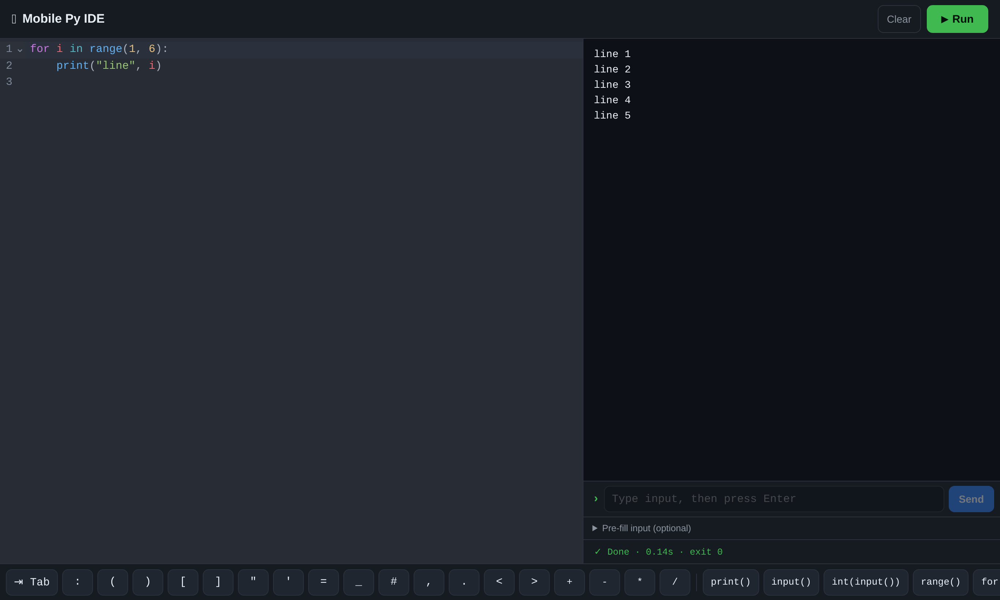

A small, safe place to write and run Python from a phone or a desktop browser.
Open the IDE in your browser — on a phone it looks like this:

Type some Python in the Code area, press ▶ Run, and the output appears in the Console. That is the whole loop.
| Element | What it does |
|---|---|
| Code / Console tabs | Switch between writing code and seeing output. On a wide screen both are shown side by side and the tabs disappear. |
| ▶ Run | Runs the code. While a program is running it turns into ■ Stop. |
| Clear | Empties the console. |
| Symbol bar | The scrollable row at the bottom with : ( " _ and shortcuts like print(), input(), for, if. Tap to insert at the cursor — no keyboard switching needed. |
| › input line | Where you type answers to a running program (see below). |
| Pre-fill input | Optional: lines sent to the program the moment it starts. |
On a desktop it becomes a two-pane layout — editor on the left, console on the right:

Press Ctrl+Enter (or Cmd+Enter) to run without reaching for the button. Your code is saved in the browser automatically, so it is still there when you come back.
This IDE has a live console. When your program calls input(), it prints its prompt, pauses, and waits — then you type into the › line at the bottom of the console and press Enter. The program continues. You can do this as many times as it asks.
name = input("What is your name? ")
print("Hello,", name, "!")Run that, type a name in the console input line, press Enter — and it answers. The typed line is echoed in blue so the transcript reads naturally.
If you never provide input, a program that reads it will stop with EOFError — that just means "no input was given".
A run is stopped automatically if it goes quiet: after about 30 seconds with no output and no input, and at a hard cap of 2 minutes. You can also press ■ Stop yourself.
These are available out of the box, no installation needed:
| Category | Modules |
|---|---|
| Everyday | math, cmath, random, statistics, decimal, fractions, json, csv, re, string, textwrap, pprint |
| Date & time | datetime, time, calendar, zoneinfo |
| Functional | itertools, functools, operator, collections, heapq, bisect, copy |
| Types & data | dataclasses, enum, typing, array, struct, uuid, base64, hashlib, secrets |
| Handy extras | sys, io, contextlib, traceback, unicodedata |
| Third-party (pre-installed) | numpy, requests |
The runner uses its own virtual environment on the server, so installing a package there makes it importable in the IDE. On the server, run:
sudo bash deploy/add-packages.sh rich tabulateThen import rich works in your programs. That is how "pip install" works here — one command on the server, available to every run afterwards.
If you install something that the validator blocks by name, unblock it in .env:
UNBLOCK_MODULES=pandasBefore anything runs, the server checks the code and refuses a few things:
torch, tensorflow, keras, transformers, cv2, sklearn, scipy, pandas, matplotlib. They would not fit the server's memory.os, subprocess, ctypes, multiprocessing, pty.socket, ftplib, smtplib, paramiko.eval, exec, open, __import__, and attributes like __class__.Each program runs in its own temporary folder, as a limited subprocess with a memory cap, and the folder is deleted the moment it finishes. A file that merely mentions a blocked word inside a string or comment is fine — the checker reads the real code.
| What you see | What it means |
|---|---|
EOFError: EOF when reading a line | The program asked for input but none arrived. Type into the › line while it runs, or pre-fill the input box. |
ValueError: could not convert string to float | The value you gave was not a number. If you pre-filled the box, check you did not paste code into it by mistake. |
| Status: Stopped: no activity | The program produced nothing for ~30 seconds, so it was stopped — usually an endless loop. |
| Status: Time limit reached | The run hit the 2-minute cap. |
Error: importing 'os' is not allowed | The checker blocked a module. See the list above. |
| Server is busy… | Two programs were already running. Wait a moment and press Run again. |
| Method & path | Purpose |
|---|---|
GET /api/health | Service status and limits. |
POST /api/run | One-shot: send {code, stdin}, get the full result as JSON. |
POST /api/runs | Start an interactive run; returns {runId}. |
GET /api/runs/:id/events | Server-Sent Events stream of output and the final exit. |
POST /api/runs/:id/input | Send {data} to the running program. |
POST /api/runs/:id/kill | Stop the run. |
curl -s localhost:3000/api/run \
-H 'Content-Type: application/json' \
-d '{"code":"import math\nprint(math.pi)"}'It is a small Node.js server (no npm dependencies) that shells out to Python in a sandbox. On an Ubuntu/Debian box:
curl -fsSL https://raw.githubusercontent.com/Vishalkumar-acad/mobile-py-ide/main/deploy/bootstrap.sh -o bootstrap.sh
sudo bash bootstrap.shPut it behind a Cloudflare Tunnel with a Cloudflare Access policy and only you can reach it. Pushes to main deploy themselves through GitHub Actions.